In the old tradition of the “<insert Language here> for Dummies” books, we start with the “Goodbye World” program.
Make a file goodbye_world.py (or what name you like).
Open your Editor.
Write:
print("Goodbye World!")
Execute:
python goodbye_world.py
and you get the output:
Goodbye World!
Thats all!
Remark: If you use Sage as your Python interpreter, simply start the program with
sage goodbye_world.py
or
sage -python goodbye_world.py
Alternatively you can do this directly in the interpreter. #. Open a shell #. Type:
python
Write:
>>> print("Goodbye World")
and press enter.
Codes of blocks are, unlike other programming languages like C++ not organized with parantheses but with indentation. I.e. it looks like the following:
Code outside Block
<statement> <identifier(s)> :
Code in block 1
Code in block 1
...
<statement2> <id> :
Code in block 2
Code in block 2
...
Code in block 1
Code in block 1
<statement3 <id3> :
Code in block 3
Code in block 1
Code outside Block
This sounds for many confusing at the beginning (including myself), but actually it is not. After writing some code (with a good editor!) one get’s used to this very quickly. Try it yourself: After a week or even a month writing code in Python, go back to Matlab or C.
The benefit of this is, that the code is much more readible, and a good programmer makes indentation nevertheless. It’s also helpful for debugging: If you make an indentation error the interpreter knows where it happend, if you forget an end or an } the compiler often points you to a line number anywere in the code.
Important note: You can choose the type of indentation as you wish. One, two, three, four,... 2011 whitespaces, or tabulators. But you should never mix whitespaces with tabulators! This will result in an error.
Generally you don’t need a semicolon, and often you don’t use it. It’s usage is for putting more than one statment in a line.For example:
1+1; 2+2
Identifier naming follows these rules in Python:
for example
_bla
no
bla_bla_2
would be valid,
2gether
one space
a-b
are non valid identifiers.
To assign a value to an identifier, we write =:
x = 2
There is no need to tell Python the data type, because the interpreter does this for you.
One can also simply change the content:
>>> x = 2
>>> x
2
>>> x = 3
>>> x
3
Don’t worry, Python handle the garbage collection for you.
Like in quite all common programming languges, the value which has to be assigned to is on the left site, this means the statement
x = x + 1
does first add one to x and then overwrite x with the new value:
>>> x = 3
>>> x = x + 1
>>> x
4
If you need more information on that topic look in the Python documentation [1].
Remark for Sage users Sage uses it’s own integers or reals. Lookup the documentation if you need further information.
In Python the following values are considered as false:
All others are true.
These are the Boolean operations, ordered by ascending priority:
| Operation | Result |
|---|---|
| x or y | if x is false, then y, else x |
| x and y | if x is false, then x, else y |
| not x | if x is false, then True, else False |
The return truly means return! Examples:
>>> 1 and 2
2
>>> 1 or 2
1
>>> not 1
False
You can represent numbers in many ways:
1
is the integer one.
1.0
is the float one.
1L
represents the long int one.
There is also a representation for floats with exponential:
1e3
which is thousand, or complex numbers:
1 + 3j
You can also create numbers directly, with their type specified:
int(5)
long(3)
float(7)
complex(3,4)
Of course you can use your Python interpreter as a calculator. Simply call
python
and then try for example:
>>> 1+1
2
>>> 2*3
6
>>> 3-2
1
>>> 1+1
2
>>> 1-1
0
>>> 2*3
6
Division is a little more tricky in Python:
>>> 1/2
0
What happened here: A division between two integers return an integer, and Python simply returns the floor. So taking negative numbers it works in the other direction:
>>> -5/2
-3
If you use the // operator than you force floor division:
>>> 1.5//3
0.0
Here is short table on basic operations:
| Operation | Code |
|---|---|
| 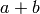 | a+b |
| 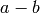 | a-b |
| 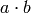 | a*b |
| 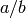 | a/b |
| 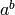 | a**b |
| 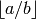 | a//b |
| 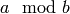 | a%b |
| 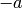 | -a |
| 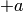 | +a |
| 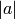 | abs(a) |
| 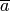 | a.conjugate() |
Some operations can be called by functions:
>>> 2**3
8
>>> pow(2,3)
8
Note: In Python one has also the arithmetic assignemnt operators +=, -=, *=, /=, **=, //=, %=, which are shortcuts for performing an operation on the variable, and assign the new value to itself. But there is a little difference: While
x = x + 1
creates a new variable that get the new value and deletes the old, while the += operator does this in place, which means the changes are performed on the object itself. (See the Python pitfalls for more on this [2]) This is done due to performance reasons.
In Python one has also the well known bit operations from C or C++ which can be performed on integers.
| Operation | Result |
|---|---|
| x | y | bitwise or of x and y |
| x ^ y | bitwise exclusive or of x and y |
| x & y | bitwise and of x and y |
| x << n | x shifted left by n bits |
| x >> n | x shifted right by n bits |
| ~x | the bits of x inverted |
There are several container types in Python
Lists are the most common container type in Python. To create a list simply write use the rectangular brackets [,]:
[1,2,3]
The value can be accessed via rectangular brackets again:
>>> liste = [1,2,3]
>>> liste[0]
1
Note that in Python, like in C, one starts with 0 to count. People who are familiar with Matlab will be happy to here that slicing is supported as well:
>>> liste[0:2]
[1, 2]
>>> liste[:]
[1, 2, 3]
Note that [k:n] goes through the indices k to n-1. Negative indices are also allowed. -1 gives back the last element, -2 the element before the last element and so on:
>>> liste[-1]
3
>>> liste[-2]
2
One can also declare step sizes to go through the indices:
>>> liste[0:3:2]
[1, 3]
>>> liste[::2]
[1, 3]
To go backwards through a list use as stepsize -1:
>>> liste[::-1]
[3, 2, 1]
Lists can also contain elements of various types:
>>> liste2 = [1, "two", liste]
>>> liste2[2]
[1, 2, 3]
>>> liste2[0]
1
The range function helps to create lists:
>>> range(5)
[0, 1, 2, 3, 4]
>>> range(1,5)
[1, 2, 3, 4]
>>> range(1,5,2)
[1, 3]
One can also create lists from other containers like strings with the list function:
>>> list("abc")
['a', 'b', 'c']
There are several methods that can be used on lists:
append adds an item to a list:
>>> liste = range(5)
>>> liste
[0, 1, 2, 3, 4]
>>> liste.append(5)
>>> liste
[0, 1, 2, 3, 4, 5]
extend appends a complete list:
>>> liste2 = range(6,9)
>>> liste.extend(liste2)
>>> liste
[0, 1, 2, 3, 4, 5, 6, 7, 8, 6, 7, 8]
insert inserts an element at a given position:
>>> liste.insert(0,9)
>>> liste
[9, 0, 1, 2, 3, 4, 5, 6, 7, 8, 6, 7, 8]
remove removes the first item from the list, whose value is given:
>>> liste.remove(9)
>>> liste
[0, 1, 2, 3, 4, 5, 6, 7, 8, 6, 7, 8]
pop removes the item at the given position:
>>> liste
[0, 1, 2, 3, 4, 5, 6, 6, 7, 8]
>>> liste.pop(7)
6
>>> liste
[0, 1, 2, 3, 4, 5, 6, 7, 8]
index gives back the index of the first element with the value given:
>>> liste
[0, 1, 2, 3, 4, 5, 6, 7, 8]
>>> liste[2]
2
count returns the number how often the element appears in the list:
>>> liste.append(8)
>>> liste.count(8)
2
reverse Reverse the elements in place:
>>> liste.reverse()
>>> liste
[8, 8, 7, 6, 5, 4, 3, 2, 1, 0]
sort sort the content of the list in place:
>>> liste.sort()
>>> liste
[0, 1, 2, 3, 4, 5, 6, 7, 8, 8]
Tuples can be created via round brackets:
coordinate = (1,2)
and they can be accessed like lists:
>>> coordinate[0]
1
>>> coordinate[0:1]
(1,)
>>> coordinate[0:2]
(1, 2)
There is a tuple function too:
>>> tuple([1,2])
(1, 2)
The main difference between tuples and lists, is that the former are immutable, that means once created you can’t change them on runtime anymore:
>>> coordinate[1] = 2
Traceback (most recent call last):
File "<stdin>", line 1, in <module>
TypeError: 'tuple' object does not support item assignment
Dictionaries are special containers that take ketwords for access. They are created with curly brackkets, and each keyword is attached to value with ::
dic = {'one': 1, 'two': 2}
one can it access now like a list, but with the keyword instead the position:
>>> dic['one']
1
Dictionaries are not immutable:
>>> dic['one'] = 3
>>> dic['one']
3
There are also sets in Python. Like the real sets, they are not ordered, and every element is contained only once. They are created with the set function:
menge = set([1,2])
Of course you can’t access an element since there is no ordering. But one can make tests on sets. We come to that right now.
One can test the membership of elements within containers.
in tests if an element is in the container and returns True or False:
>>> liste = range(5)
>>> 5 in liste
False
>>> 4 in liste
True
>>> liste
[0, 1, 2, 3, 4]
not in ... well make an educated guess.
len returns the length of an container:
>>> liste
[0, 1, 2, 3, 4]
>>> len(liste)
5
>>> tupel = tuple(range(4))
>>> len(tupel)
4
min, max return the minimal or the maximal value of the container:
>>> liste
[0, 1, 2, 3, 4]
>>> max(liste)
4
>>> tupel
(0, 1, 2, 3)
>>> min(tupel)
0
Note thate the output depends on the order relation between the objects!
The + operator can also be performed to concenate two lists (Note: set does not support this!):
>>> liste
[0, 1, 2, 3, 4]
>>> liste + liste
[0, 1, 2, 3, 4, 0, 1, 2, 3, 4]
The * operator makes copies of the same container and concenate them (Note: set does not support this!)
>>> liste
[0, 1, 2, 3, 4]
>>> liste*2
[0, 1, 2, 3, 4, 0, 1, 2, 3, 4]
>>> tupel
(0, 1, 2, 3)
>>> tupel*2
(0, 1, 2, 3, 0, 1, 2, 3)
Strings are containers too, but they are quite special, so they get their own section here. There are several ways to create strings in Python:
a = 'bla'
b = "bla"
c = """bla"""
d = str('bla')
e = '''bla'''
The only one of these, which is slightly different is the triple quote ‘’‘ or “”“, which allows multilines and quotes inside the string:
string = """Hi! I'm the "best" sting in this Universe.
You can believe me, there is no better one."""
One can also create strings over more lines using the backslash:
>>> a = "First \
... Second"
>>> a
'First Second'
Note that writing two strings in one command leads to creating only one string:
>>> a = "First" " Second"
>>> a
'First Second'
Of course strings are objects to so you can call class methods on them.
Note that Strings are immutable in Python, which means that you can’t alter it, after you you created it. Like everything this has benefits and drawbacks.
Another important attribute of strings is that they are containers. You can access every element like a vector in Matlab:
>>> "hat"[0]
'h'
>>> "hat"[2]
't'
>>> "hat"[0:]
'hat'
>>> "hat"[0:1]
'h'
>>> "hat"[0:2]
'ha'
This somehow logical, because every character is simply an object, in a list of characters, which form the string. People who are coming from the C world, will be familiar with this, because in C a string is also a list of chars.
You can specify some types of strings in Python:
r"Newlines are made with \n"
This makes a raw string, on which no formating as applied. Capital R works also for this.
We also can create unicode strings with utf8 support:
kebap = "Dürüm"
This looks like the following in Python:
>>> kebap
'D\xc3\xbcr\xc3\xbcm'
>>> print(kebap)
Dürüm
Two put two strings together one can use the + operator:
>>> a = "First"
>>> b = " Second"
>>> a+b
'First Second'
Formating like in C is also allowed:
>>> a = "First \nSecond"
>>> print(a)
First
Second
Note again the difference to the raw string:
>>> b = r"First \n Second"
>>> print(b)
First \n Second
We can also make replacement statements:
>>> breakfast_everyday = "I had %(SPAM)s pieces of spam, and %(EGGS)s eggs for breakfast"
>>> todays_spam = 2
>>> todays_eggs = 3
>>> breakfast_today = breakfast % {'SPAM': todays_spam, 'EGGS': todays_eggs}
>>> print(breakfast_today)
I had 2 pieces of spam, and 3 eggs for breakfast
To use the % sign in a string you should use a raw string or simply write %% for example:
print('%(NR)s %%' % {'NR': 100})
else you would get an error!
There are other possibilities to replace placeholders:
"There are {0} nuns in this castle!".format(5)
"{1} plus {0} is {2}".format(1,2,1+2)
"{ONE} plus 2 is 3".format(ONE=1)
"{numbers[0]} plus {numbers[1]} is {numbers[2]}".format(numbers=[1,2,3])
For further information see the Python documentation on strings [3]
We used it already some times. Here we give further information.
To print a simple string for example write:
print("I'm a string!")
or without braces:
print "I'm a string"
(Why did I always write those stupid brackets, when I don’t have to? I come back later to that topic.)
We can also print numbers or other datatypes:
print(1)
In fact every class that holds a __str__, or __repr__ method can be printed. We will come back later to that in the section of :ref: class_ref .
To print more than one thing you can use a comma (,)
print 1, “plus”, 2, “is”, 1+2
this gives back:
1 plus 2 is 3
Note that here with use of the brackets we would get:
>>> print(1, "plus", 2, "is", 1+2)
(1, 'plus', 2, 'is', 3)
To avoid newline, simply add a comma at the end of the statement:
print 1, "plus",2, "is",
print 1+2
Note: In Python 2.x print is a statement, in Python 3 print is a function. This is one of the most discussed changes from Python 2 to Python 3 (see for example this famous thread on the Python mailinglist [4] . In order to keep your Code compatible, you can import the print function with:
from __future__ import print_function
In Python 3 the line
print 2
would be invalid. One has to use the brackets. This is the reason why I write here all print statements in brackets to make it easier to “port” this document to Python 3.x.
With the print function the statement
print(1, "plus", 2, "is", 1+2)
would now return
1 plus 2 is 3
which was to be expected. The trick with the newline, also doesn’t work anymore. To get newline at the end you would have to write
print(1, end=" ")
Here I shortly list the available comparison statments in Python. The syntax should be very familiar to C programmers.
| Operation | Meaning |
|---|---|
| < | strictly less than |
| <= | less than or equal |
| > | strictly greater than |
| >= | greater than or equal |
| == | equal |
| != | not equal |
| is | object identity |
| is not | negated object identity |
Attention: A trap for beginners (including me) is, that the is statment, is different from the == operator. For example
x = 1
x is 1
does work correctly, but
x = 1.0
x is 1.0
does not.
Links
| [1] | http://docs.python.org/library/stdtypes.html |
| [2] | http://zephyrfalcon.org/labs/python_pitfalls.html |
| [3] | http://docs.python.org/library/string.html |
| [4] | http://mail.python.org/pipermail/python-list/2010-June/1248174.html |